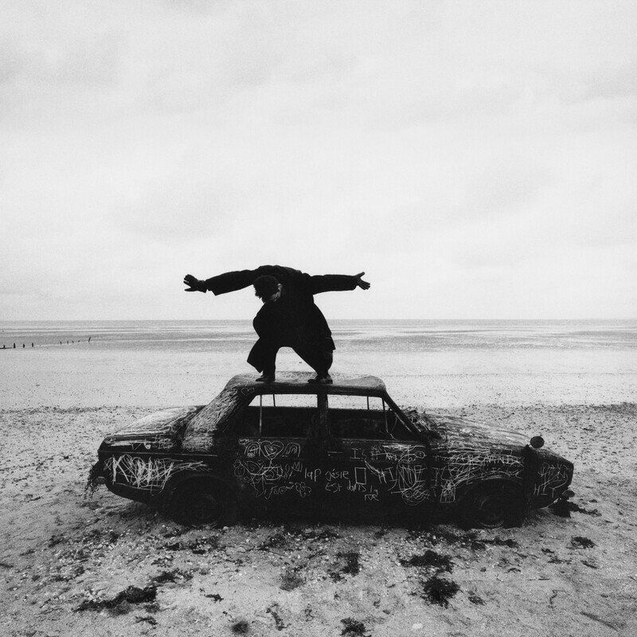

Struktur Data & Logika Jelas
Memastikan skema tabel, relasi MySQL, dan validasi input dirancang rapi sejak awal agar aplikasi mudah dirawat.
Rekayasa Perangkat Lunak — SMKN 6 Kota Tangerang Selatan
Saya Raditya Ega Dasilva (biasa dipanggil Ega), pelajar jurusan Rekayasa Perangkat Lunak (RPL) yang berfokus pada pengembangan aplikasi desktop berbasis C# (.NET WinForms) dan MySQL, perancangan antarmuka web, serta eksplorasi solusi berbasis Generative AI.
Menggabungkan logika pemrograman terstruktur dengan kepekaan terhadap alur penggunaan nyata.
Kompetensi Keahlian Rekayasa Perangkat Lunak (RPL)
Tangerang Selatan, BantenBagi saya, perangkat lunak yang baik bukan hanya soal kode yang berhasil dikompilasi tanpa galat—melainkan sistem yang alurnya jelas bagi pengguna, datanya tertata rapi di balik layar, dan antarmukanya tidak membingungkan.
Selama menempuh pendidikan di jurusan Rekayasa Perangkat Lunak (RPL) SMKN 6 Kota Tangerang Selatan, saya mempelajari pengembangan aplikasi secara menyeluruh. Di ranah desktop, saya terbiasa membangun sistem berbasis C# (.NET WinForms) yang terhubung langsung ke basis data relasional MySQL—mulai dari sistem otentikasi operator, pencatatan transaksi, hingga pencetakan struk fisik.
Di luar pemrograman desktop dan web (HTML, CSS, JavaScript), saya juga aktif mendalami perancangan User Flow, penerapan psikologi warna dalam antarmuka, serta pemanfaatan Generative AI melalui AWS PartyRock. Di waktu luang, saya mempelajari bahasa Jerman (Deutsch) di samping bahasa Indonesia dan Inggris untuk memperluas akses terhadap referensi teknologi global.
Memastikan skema tabel, relasi MySQL, dan validasi input dirancang rapi sejak awal agar aplikasi mudah dirawat.
Merancang alur kerja—baik untuk kasir toko maupun siswa yang membutuhkan ruang konseling aman—agar minim hambatan.
Memanfaatkan alat modern seperti Generative AI secara terarah dengan perancangan prompt yang teruji.
Ringkasan bidang keahlian yang saya pelajari dan terapkan langsung dalam pengerjaan proyek sekolah maupun eksplorasi mandiri.
Membangun aplikasi operasional berbasis Windows Forms dengan manajemen hak akses pengguna, pengelolaan transaksi CRUD, koneksi MySQL melalui phpMyAdmin, serta dukungan cetak struk termal.
Menyusun struktur dokumen web dengan HTML semantik, tata letak responsif berbasis CSS Grid dan Flexbox, serta interaktivitas komponen antarmuka menggunakan Vanilla JavaScript.
Memetakan kebutuhan sistem menjadi arsitektur halaman dan User Flow yang logis, sekaligus mempertimbangkan aspek psikologi warna dan kenyamanan visual pengguna.
Merancang alur interaksi AI berbasis prompt engineering untuk menyelesaikan permasalahan spesifik, didukung kemampuan komunikasi lintas bahasa dalam konteks pembelajaran dan dokumentasi.
Penjelasan konteks masalah, solusi teknis, arsitektur sistem, serta teknologi di balik setiap proyek yang saya kerjakan. Klik Baca Studi Kasus untuk melihat rincian alur sistem.
Aplikasi kasir desktop berbasis Windows Forms yang dirancang untuk mempercepat pencatatan transaksi penjualan kedai kopi dan roti secara terstruktur, aman, dan terhubung ke database lokal.
Pencatatan pesanan manual rentan salah hitung, menyulitkan pelacakan riwayat penjualan, serta tidak memisahkan akses antar-operator kasir.
Membangun antarmuka WinForms dengan otentikasi operator khusus, integrasi tabel relasional MySQL (dikelola via phpMyAdmin) untuk penyimpanan transaksi, dan modul cetak struk termal otomatis.
Platform asisten interaktif berbasis Generative AI di AWS PartyRock yang menganalisis limbah rumah tangga pengguna dan mengubahnya menjadi panduan kreasi daur ulang yang fungsional.
Banyak sampah rumah tangga seperti botol, kardus, dan kemasan plastik langsung dibuang karena pengguna tidak memiliki referensi ide pengolahan yang praktis.
Merancang alur widget dan prompt terstruktur agar AI mampu mengidentifikasi karakteristik limbah lalu menghasilkan instruksi langkah demi langkah yang ramah lingkungan.
Perancangan arsitektur sistem dan alur pengguna (User Flow) aplikasi web konseling anonim bagi siswa, menggabungkan keamanan privasi dengan pendekatan psikologi warna untuk meredakan kecemasan.
Siswa kerap merasa canggung atau khawatir identitasnya terungkap ketika ingin berkonsultasi mengenai masalah pribadi maupun akademik di lingkungan sekolah.
Menyusun arsitektur sistem berorientasi anonimitas dengan User Flow yang ringkas serta sistem tata warna yang dirancang berdasarkan psikologi warna agar suasana konsultasi terasa aman.
Bagian personal yang membentuk selera visual dan fokus saya saat bekerja—lagu yang sering menemani sesi ngoding dan satu cuplikan motorsport favorit.

Atmosfer monokrom dan aransemen yang tenang membantu menjaga konsentrasi saat merancang antarmuka dan menulis kode.
Di luar dunia perangkat lunak, saya menyukai Formula 1—terutama bagaimana presisi teknik, manajemen strategi, dan fokus pengemudi bekerja dalam satu kesatuan di setiap putaran.
Saya terbuka untuk berdiskusi seputar pengembangan aplikasi desktop, desain alur web, maupun peluang belajar bersama di dunia rekayasa perangkat lunak.
Eksplorasi source code & eksperimen pemrograman
Aktivitas keseharian dan koneksi langsung
SMKN 6 Kota Tangerang Selatan · Jurusan RPL